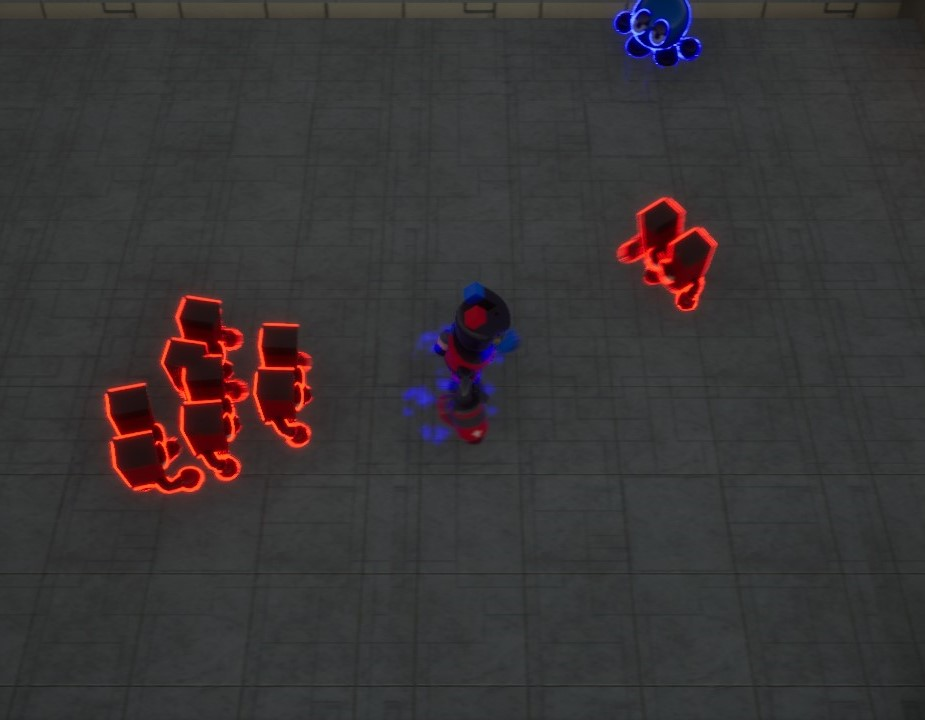
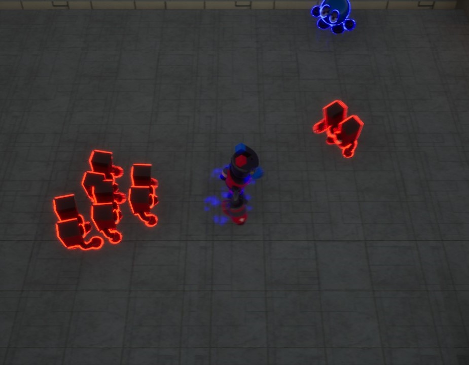

UE4 Raymarching Plugin
Academic and Personal Project
Simply put, raymarching is a rendering technique where shapes are defined by mathematical formulas rather than with traditional 3D models. This opens the door for some really interesting and unique effects. I wanted to create a tool that would make these effects more accessible to more artists.
After starting this project, I quickly realized just how massive in scope it actually is. However, its also become my favorite pet project to keep coming back to every chance I get.
 
